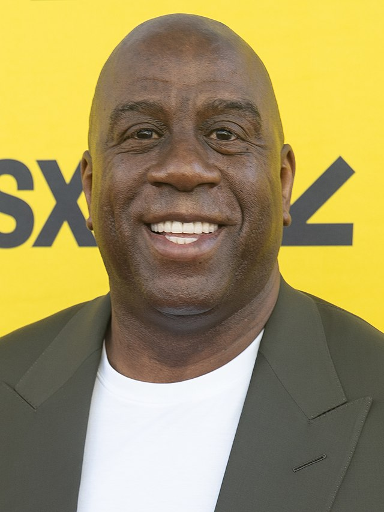
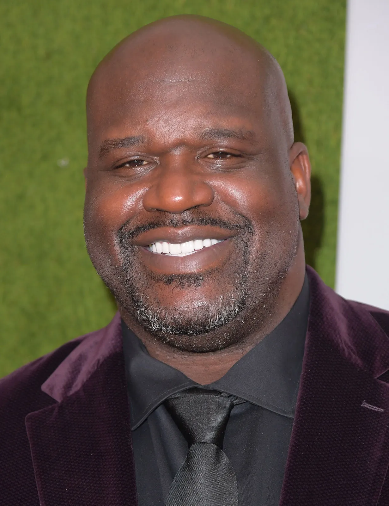
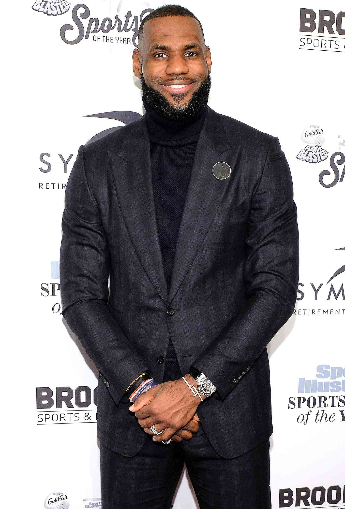
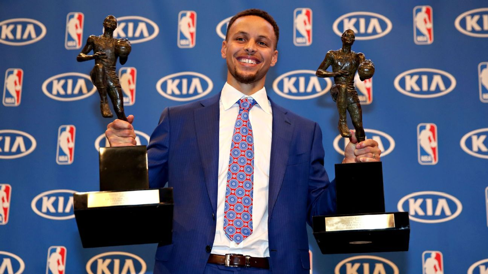
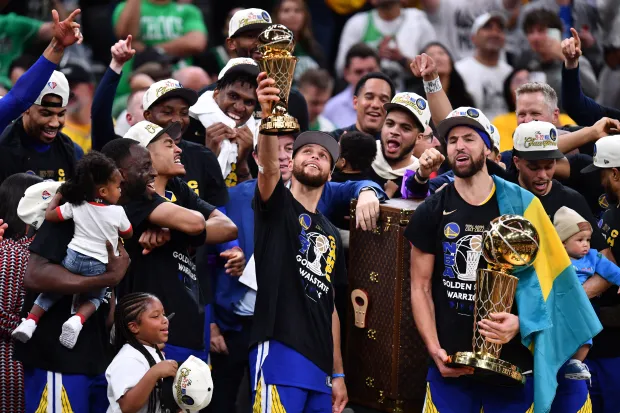
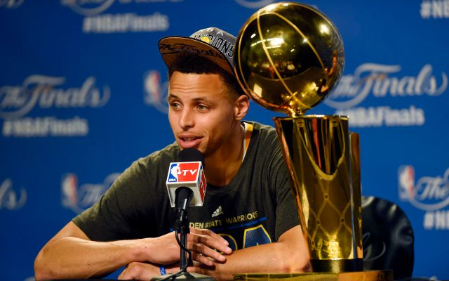
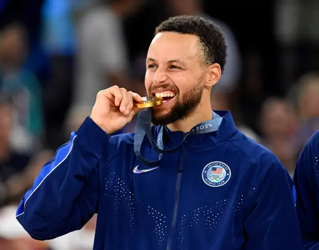

Career
Achievements
- 10x All-Star
- 4x NBA Champion
- 2x MVP
- 1x Finals MVP
- 1x All-Star Game MVP
- All Time Leader In 3-Pointers Made
- 2x Scoring Champion
Stats
- Games Played: 969
- Points: 23,954
- Assists: 6,203
- Rebounds: 4,580
- Blocks: 243
- Steals: 1,494
Best
- Minutes: 49
- Points: 62
- Assists: 16
- Rebounds: 14
- Blocks: 3
- Steals: 7
NBA Legends on Curry

"Stephen Curry is not only the greatest shooter we’ve ever seen but also a game-changer who reshaped basketball."

"Steph changed the way the game is played. He's a pioneer, making everyone want to shoot threes."
"Curry’s ability to shoot off the dribble and with consistency is unlike anything I’ve ever seen."

"Steph has inspired an entire generation. His skill set is unmatched, and he's one of the most influential players ever."
Curry's Collection

First MVP / Unanimous MVP

First Finals MVP and Fourth Championship

First Championship

All-star MVP 2022

Olympic Gold Medal Winner